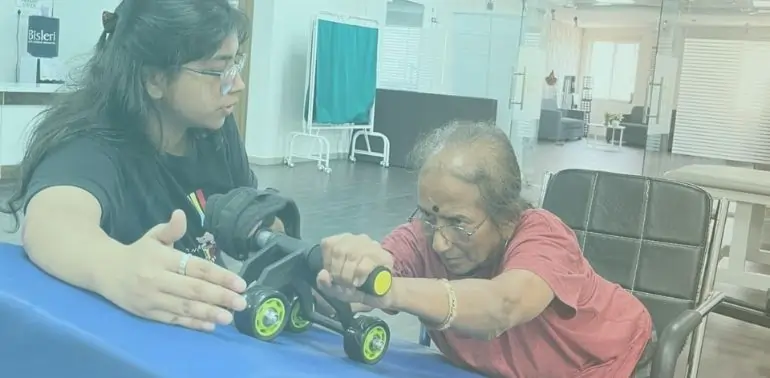

Physiotherapy clinic in Viman Nagar
World-Class Rehabilitation, Just a 10-Minute Drive from Viman Nagar
Don't settle for a small clinic. Access Pune’s most advanced Robotic Rehabilitation & Inpatient Center right next door.

Distance
Travel Time
Based on 100+ Reviews
Rating

Why Viman Nagar Residents Choose Apricot Care Life
If you live in Viman Nagar (Lunkad Gardens, Clover Park, Sakore Nagar) you have many local clinics nearby. But for serious recovery, you need more than just a consultation room.
Apricot Care is the preferred "Medical Neighbor" for Viman Nagar residents seeking specialized care. Located just across the highway in Thite Nagar, Kharadi, , we bridge the gap between a standard clinic and a large hospital.
Why Viman Nagar Residents Benefit from Apricot Care
Our facility is uniquely positioned to meet the needs of Viman Nagar's community, offering a higher level of care for both routine and complex cases.
Advanced Robotics
We offer technology most Viman Nagar clinics lack, including Robotic Hand Gloves and Gait Trainers.
Inpatient Facility
Unlike outpatient centers, we have beds for patients who need 24/7 care after Stroke or Surgery.
No Traffic Stress
Located at the start of Kharadi, you avoid the heavy traffic of the EON IT Park area.
Our Specialized Services for Viman Nagar Residents
We cater to the specific needs of Viman Nagar's diverse population from corporate professionals to retired defense personnel. We go beyond basic physiotherapy. Our facility is equipped to handle complex medical and neurological conditions with dedicated care plans.
We specialize in conditions that require intensive retraining of the nervous system and constant medical monitoring.
- Stroke Care: Restore lost strength, balance, and cognitive functions to ensure the best possible outcome post-stroke. We utilize robotic gloves and gait trainers for faster recovery.
- Parkinson’s Care: Improving strength, cognitive function, & emotional health to slow down the disease progress and maintain independence.
- Craniotomy Care: Multidisciplinary & specialized rehabilitation care for total recovery after brain surgery (clot removal/tumor).
- Trauma Care: Quality and timely rehabilitation is a critical factor for recovery to normal life after road accidents or severe falls.
- Alzheimer’s Care: Enhance everyday functioning and independence in patients with memory issues through cognitive exercises and routine building.
For residents suffering from chronic pain or recovering from surgery, we offer targeted physical therapy.
- Spine Care: Personalized care plans to bring back lost physical and emotional strength. We treat Sciatica, Disc Prolapse, and Spondylosis.
- Orthopedic Care: Restore strength, endurance, flexibility, & mobility to recover from knee/hip surgery or fractures.
- Postoperative Care: Continuous and specialized nursing care for full recovery from the effects of major surgeries (TKR/THR).
Unlike standard clinics, Apricot Care provides high-acuity nursing services for patients transitioning from the ICU to home.
- Tracheostomy Care: 24x7 Care including dressing of the Tracheostomy site, coping with dry air, speaking, and eating assistance.
- Feeding Tube Care: Reassurance to relieve anxiety, oral hygiene, care of the tube (Ryle's Tube/PEG), dressing, and feeding management.
- Post Covid-19 Care: Control the immediate and long-term impact of COVID-19 (breathing difficulties, fatigue) through a comprehensive care program.
We support the aging population of Viman Nagar with programs designed to improve quality of life.
- Senior Care: Better manage the physical, functional, and emotional well-being of elders, focusing on fall prevention and mobility.
- Cardiac Rehab: Medically-supervised care program designed for healthy lifestyle initiatives post-heart attack or bypass surgery.
- Oncology Rehab: Effective pain management and psychological support to enable the recovery of cancer patients during or after treatment.

our service
Our Comprehensive Care and Support Services
.webp)
.webp)
-(1).webp)
24/7 Nursing and Medical Supervision
At Apricot Care Assisted Living and Rehabilitation, we provide 24/7 nursing support to ensure that you receive continuous care and medical monitoring. Whether you're staying in our facility or recovering at home, our trained nurses and medical staff are always available to address your needs, ensuring a safe and secure environment throughout your recovery journey.
.webp)
.webp)
.webp)
.webp)
.webp)
.webp)
.webp)
.webp)
.webp)
.webp)
.webp)
.webp)
Physiotherapy at Home in Viman Nagar
Premium Care in Your Living Room.
Can't travel? Our expert team brings the clinic to you. We serve all key areas of Viman Nagar including:
- Lunkad Gardens & Clover Park
- Sakore Nagar & Viman Nagar Corner
- Mhada Colony & Symbiosis Area
Reaching Us is Fast & Easy
We are strategically located to be accessible without getting stuck in deep Kharadi traffic.
-
🚗 By Car/Cab (Recommended for Patients):
- Drive down Nagar Road past Phoenix Market City.
- Cross the Chandan Nagar signal and take the right at Kharadi Bypass.
- We are in Ganga Altus, Thite Nagar (Approx 10-12 mins).
- Valet & Wheelchair parking available.
-
🚌 By Bus (PMPML):
- Bus Routes: 234, 225, or 163 from Viman Nagar Corner.
- Stop: Get down at Patil Wasti / Thite Nagar.
- Walk: It’s just a 3-minute walk to our center.
Upgrade Your Recovery Today.
📞 Call: +91-7387641462 📍 Directions: https://maps.app.goo.gl/zz6tgenZc7mPGviE6